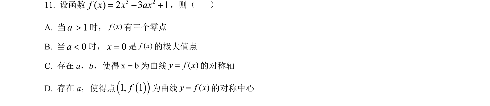
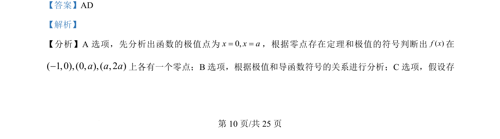
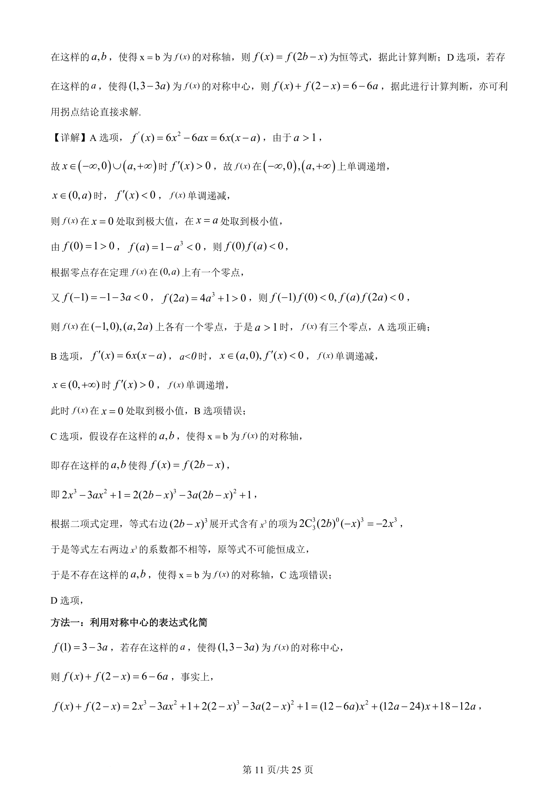
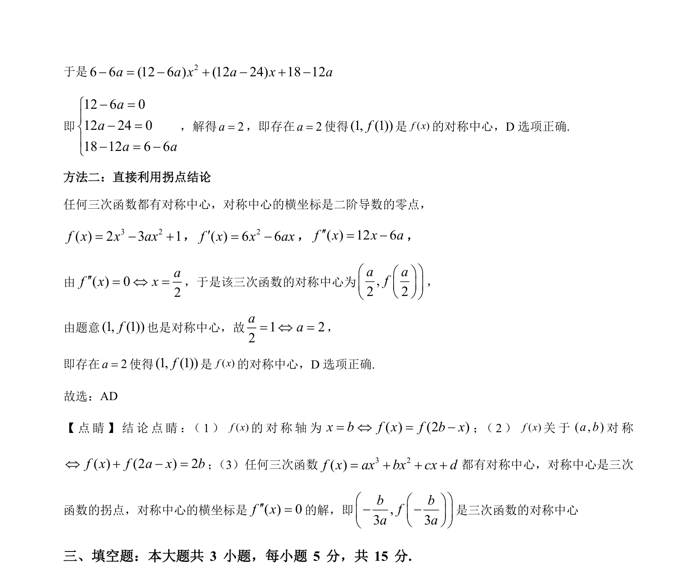

考点：导数 函数零点 极值 对称轴 对称中心

f(x)=2x³-3ax²+1，综合判断关于零点个数、极值点、对称轴和对称中心的四个命题真假。



📄 原 PDF 第 10 页：
素材/真题/吉林/2008-2024·（吉林）数学高考真题/2024年高考数学试卷（新课标Ⅱ卷）（解析卷）.pdf
【答案】AD 【解析】 【分析】 A 选项，先分析出函数的极值点为0,xxa==，根据零点存在定理和极值的符号判断出( )f x在 ( 1,0),(0, ),( , 2 )a a a-上各有一个零点；B 选项，根据极值和导函数符号的关系进行分析；C 选项，假设存